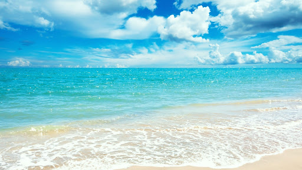
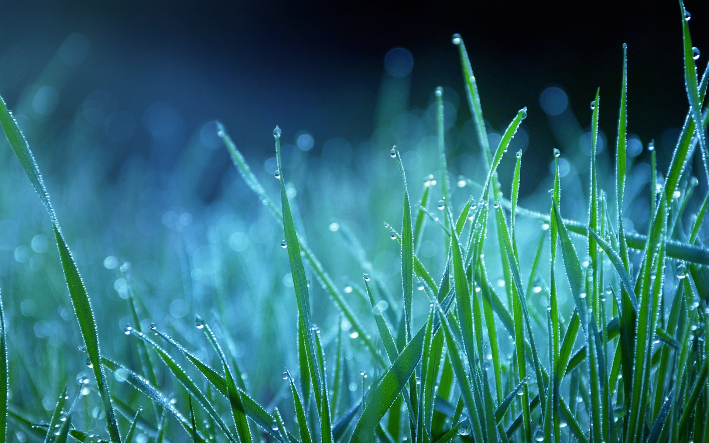

About Kanyakumari
Kanyakumari, India's southernmost tip, has lofty patches of red cliffs with deep blue waters and, of course, the union of three major water bodies—the Bay of Bengal, the Arabian Sea, and the Indian Ocean. Kanyakumari is all about picture-perfect sunsets, enchanting full-moon nights, delectable coastal cuisine, walks along the azure waters, and, of course, the thrill of being in such a geographically wonderful destination, Kanyakumari will always leave you wanting more. The places to visit in Kanyakumari include some of the most beautiful scenery you will ever see, from scenic beaches to churches, temples, waterfalls, and monuments.
Kanyakumari, in Tamil Nadu, is one of a kind in many ways and has unrivalled scenic beauty. Kanyakumari is an ideal tourist destination and weekend getaway for residents of Trichy, Thiruvananthapuram, Pondicherry, Coimbatore, and Chennai due to its strategic location. Travelers will, of course, have a plethora of options in terms of places to visit and things to do in Kanyakumari. The Vivekananda Rock Memorial, dedicated to religious reformer Swami Vivekananda, is one of Kanyakumari's most popular tourist attractions.
The rock memorial, which covers six acres and is located on an island a few metres into the sea at a height of 17 metres above sea level, is situated on an island a few metres into the sea. Apart from that, a major tourist attraction is a statue of celebrated Tamil poet Thiruvalluvar, which stands tall near the confluence of the three seas.
 |
The Gandhi Memorial, which is located on the beach, is another structure that attracts a lot of attention. The monument is designed in such a way that on Gandhiji's birthday, sunlight shines through a hole in the ceiling. There are a number of beautiful beaches in Kanyakumari, including Sothavilai Beach, Sanguthurai Beach, and, of course, the main Kanyakumari Beach. The beautiful beaches of Kanyakumari will always fill you with a sense of wonder as you play in the ocean or walk along the beaches while watching the beautiful sun set over the horizon.
Aside from the coast, Kanyakumari has a range of other tourist attractions, including waterfalls, temples, churches, museums, and historical monuments. If you are religious, you can choose from a variety of temples and churches scattered throughout the city. You would undoubtedly feel blessed if you attend a midnight mass at the Our Lady of Ransom Church or give prayers at the Bhagavathy Amman Temple.
History buffs will enjoy visiting the Kanyakumari Wax Museum and the Vattakottai Fort. In an attempt to assist tourists visiting Kanyakumari, we have included all of the pertinent information about the places to see and things to do in our Kanyakumari Travel Guide, which can also assist you with directions and the best time to visit. You can depend on us for the most up-to-date details.
Best Time to Visit - Kanyakumari
Summer |
Monsoon |
Winter |
|---|---|---|
|

Summers in Kanyakumari are hot and humid. The average temperature ranges between 25°C to 34°C during April and May making it somewhat uncomfortable for the tourists especially during daytime. Therefore, you will find comparatively less tourists flocking to the place during this time of the year. |

Monsoons span from June end till September in the area. Kanyakumari receives somewhat moderate rainfall. However, the weather becomes quite humid during this time making it slightly unbearable for travellers. Nonetheless if you want to experience the exquisiteness of the three oceans' confluence, it can be one of the best times. |
Winter months are the best time to visit Kanyakumari when the weather is absolutely pleasant. Temperature ranges between 17°C and 22°C, humidity in the air gets completely reduced thus making more comfortable for tourists to venture out. The cool breeze from the seas enhances the serenity of the region. |
Owing to its location, a tropical climate characterises Kanyakumari. Summers can get exceptionally hot and sunny while monsoons become highly humid. This is why, the best time to visit Kanyakumari is the winters months when the weather is cool and pleasant. Maximum tourists flock to the city from November to March.
Explore Kanyakumari
History |

Sights to |
Delicious Dishes |

Restaurents |
How to Reach Kanyakumari
 |
||
AirThe nearest airport is Thiruvananthapuram (87 KM). Connected to all major cities in India. |
RailKanyakumari has a Rail head which is well connected other parts of the country. |
RoadKanyakumari is connected by good motorable highways to all major cities in India. |